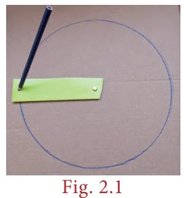
A circle is the path traced by a moving point so that its distance from a fixed point is always constant. The fixed point of the circle is called its 'centre' and the constant distance is called its 'radius'.
Further, if any two points on the circrumference of a circle are joined by a line segment, then the line segment is called a 'chord'. A chord divides a circle into two parts. A chord which passes through the centre of a circle is called as a 'diameter'. A diameter of a circle divides it into two equal parts. It is also the 'longest chord' of a circle.
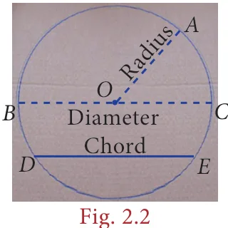
Activity
- Using a bangle, draw a circle on the paper and cut it. Then mark any two points A and B on it and fold the circle so that the fold has A and B on it. Now, this line segment represents a chord.
- By paper folding, find two diameters and hence the centre of a circle.
- Check whether the diameter of a circle is twice its radius.
2.2.1 Circular Arc and Circular Sector
Look at the glass bangle and the pizza given in Fig. 2.3 carefully.
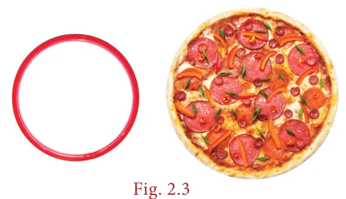
Though both are of circular shapes, what we understand is that, the bangle indicates the boundary of the circle, whereas the pizza indicates the plane enclosed within the boundary of the circle. Thus, it is clear that the bangle indicates the circumference of the circle whereas the pizza indicates the area of the circle.
From them, cut a part as shown in Fig. 2.4.
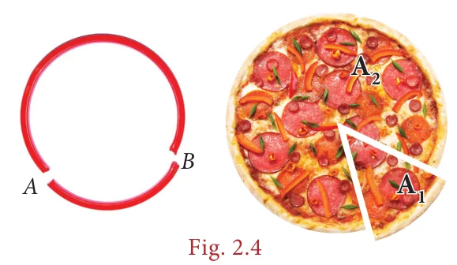
Each of the glass bangle pieces represents the circular arcs. Here, arc AB \(\left(\overset{\frown}{AB}\right)\) is the smaller one and arc BA \(\left(\overset{\frown}{BA}\right)\) is the larger one. Each of the parts of the pizza represents the circular sectors. Here \(A_1\) is the minor sector and \(A_2\) is the major sector.

- A part of the circumference of a circle is called a circular arc.
- The plane surface that is enclosed between two radii and the circular arc of a circle is called a sector.
- Each part of a circle which is divided by a chord is called a segment.
Note
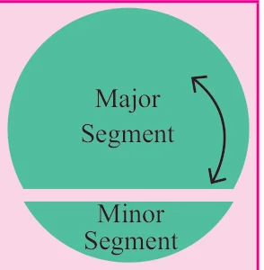
The part which has a smaller arc is called as the 'minor segment' and the part which has a larger arc is called as the 'major segment'.
Think
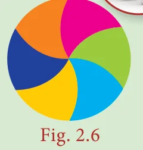
The given circular figure is divided into six equal parts. Can we call the equal parts as sectors? Why?
Central Angle
The angle formed by a sector of a circle at its centre is called the central angle. The vertex of the central angle of the sector is the centre of the circle. The two arms of it are the radii. In the Fig. 2.7, the shaded sector has the central angle, \(\angle AOB = \theta^{\circ}\) (read as theta) and its two arms OA and OB are the radii of the circle.
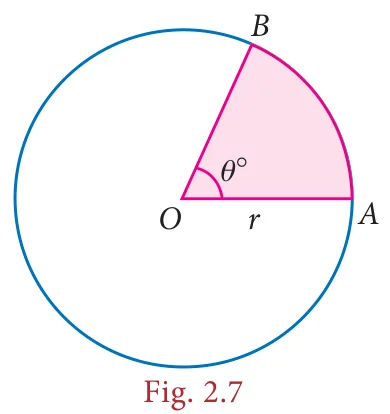
The central angle of a circle is 360°. If a circle is divided into '\(n\)' equal sectors, the central angle of each of the sectors is \(\theta^{\circ} = \frac{360^{\circ}}{n}\).
For example, the central angle of a semicircle \(= \frac{360^{\circ}}{2} = 180^{\circ}\) and the central angle of a quadrant of a circle \(= \frac{360^{\circ}}{4} = 90^{\circ}\).
Try these
Fill the central angle of the shaded sector (each circle is divided into equal sectors)
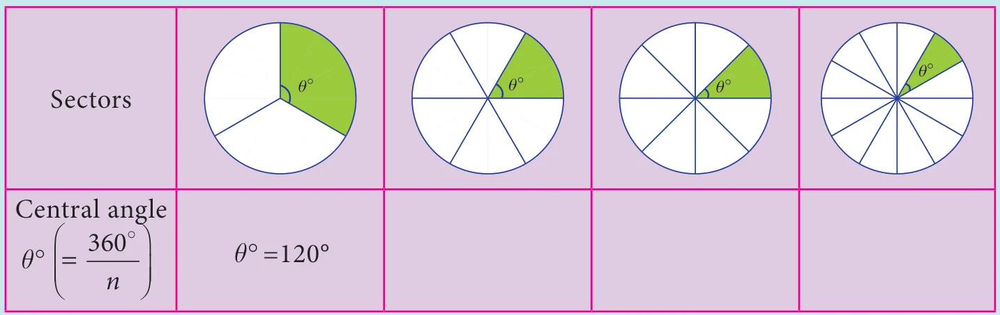
2.2.2 Length of the arc and Area of the sector
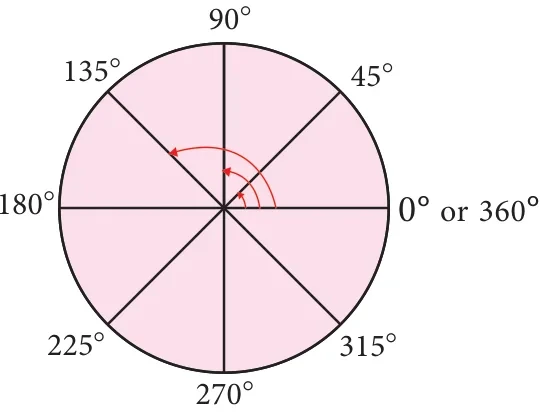
We have already learnt that a circle of radius '\(r\)' units has
Central angle \(= 360^{\circ}\)
Circumference of the circle \(= 2\pi r\) units
Area of the circle \(= \pi r^2\) Sq.units.
First, let us take a circle . If a circle is divided into 2 equal sectors we will get 2 semi-circles. The length of a semi-circular arc is half of the circumference of the circle and the area of the semi-circle is half of the area of the circle.
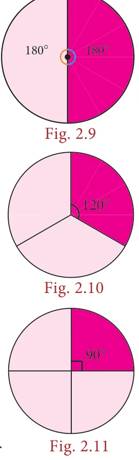
Length of the semi-circular arc \(= \frac{1}{2} \times 2\pi r = \frac{180^{\circ}}{360^{\circ}} \times 2\pi r\) units.
Area of the semi-circle \(= \frac{1}{2} \times \pi r^2 = \frac{180^{\circ}}{360^{\circ}} \times \pi r^2\) sq.units.
Smilarly, if a circle is divided into 3 equal sectors,
Length of the arc of this sector \(= \frac{1}{3} \times 2\pi r = \frac{120^{\circ}}{360^{\circ}} \times 2\pi r\) units
Area of the sector \(= \frac{1}{3} \times \pi r^2 = \frac{120^{\circ}}{360^{\circ}} \times \pi r^2\) sq. units.
In the same way, if a circle is divided into 4 equal sectors,
Length of the arc of the circular quadrant \(= \frac{1}{4} \times 2\pi r = \frac{90^{\circ}}{360^{\circ}} \times 2\pi r\) units.
Area of the quadrant \(= \frac{1}{4} \times \pi r^2 = \frac{90^{\circ}}{360^{\circ}} \times \pi r^2\) sq.units
What do we know from this?
If the ratio of the central angle of a sector to the central angle of a circle is multiplied with the circumference and the area of the circle, we can find the length of the arc of that sector and its area respectively.
That is, if we assume that the central angle of a sector of radius '\(r\)' units as \(\theta^{\circ}\), then, the ratio of the central angle \(\theta^{\circ}\) to \(360^{\circ}\) is \(\frac{\theta^{\circ}}{360^{\circ}}\).
Length of the arc, \(l = \frac{\theta^{\circ}}{360^{\circ}} \times 2\pi r\) units
Area of the sector, \(A = \frac{\theta^{\circ}}{360^{\circ}} \times \pi r^2\) sq.units.
Think
Instead of multiplying by \(\frac{1}{2}\), \(\frac{1}{3}\) and \(\frac{1}{4}\), we shall multiply by \(\frac{180^{\circ}}{360^{\circ}}\), \(\frac{120^{\circ}}{360^{\circ}}\) and \(\frac{90^{\circ}}{360^{\circ}}\) respectively. Why?
Note
- If a circle of radius \(r\) units divided into \(n\) equal sectors, then the
Length of the arc of each of the sectors \(= \frac{1}{n} \times 2\pi r\) units and
Area of each of the sectors \(= \frac{1}{n} \times \pi r^2\) sq.units
- Also, the area of the sector is derived as \(= \frac{\theta^{\circ}}{360^{\circ}} \times \pi r^2\)
\(= \frac{1}{2}\left(\frac{\theta^{\circ}}{360^{\circ}} \times 2\pi r\right) \times r\)
\(= \left(\frac{1}{2} \times l\right) \times r = \frac{lr}{2}\) sq.units
2.2.3 Perimeter of a sector
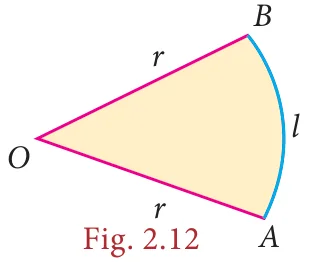
We already know that the total length of the boundary of a closed part is its perimeter, Isn't it? What is the boundary of a sector? Two radii (\(OA\) and \(OB\)) and an arc \(\overset{\frown}{AB}\).
So, the perimeter of a sector = length of the arc + length of two radii
\(P = l + 2r\) units
\(\therefore\) Perimeter of a sector, \(P = l + 2r\) units
Do You Know?
Tamil people always have a prominent role in the history of Mathematics. They had recorded in the form of a song on how to find the area of a circle, a few thousand years before itself, in the book titled 'Kanakkathikaram'. (கணக்கதிகாரம்). The song is as follows:
"வட்டத்தரை கொண்டு விட்டத்தரை தாக்கச் சட்டெனத் தோன்றும் குழி"
Meaning:
'வட்டத்தரை' represents half of the circumference and 'விட்டத்தரை' represents half of the diameter which is the radius and 'குழி' represents the area. In this song, the Tamil people had recorded that, if half the circumference is multiplied by half the diameter, the area of the circle can be calculated.
Area of the circle = வட்டத்தரை \(\times\) விட்டத்தரை
\(= \frac{1}{2}\) of circumference \(\times \frac{1}{2}\) of diameter \(= \left(\frac{1}{2} \times 2\pi r\right) \times r\)
\(\therefore\) Area of the circle, \(A = \pi r^2\) sq.units
Note
- The perimeter of a semi-circle
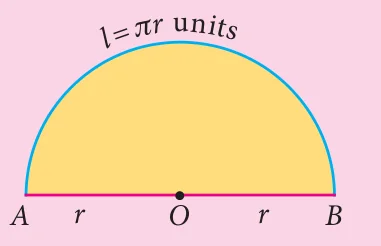
\(P = l + 2r\) units
\(= \pi r + 2r = (\pi + 2)r\) units
- The perimeter of a circular quadrant
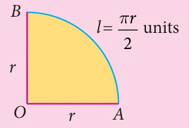
\(P = l + 2r = \frac{\pi r}{2} + 2r = \left(\frac{\pi}{2} + 2\right)r\) units
Example 2.1
The radius of a sector is 21cm and its central angle is \(120^{\circ}\). Find (i) the length of the arc (ii) area of the sector (iii) perimeter of sector. \(\left(\pi = \frac{22}{7}\right)\)

Solution:
Radius, \(r = 21\) cm and central angle, \(\theta = 120^{\circ}\).
- Length of the arc, \(l = \frac{\theta^{\circ}}{360^{\circ}} \times 2\pi r\) units
\(= \frac{120^{\circ}}{360^{\circ}} \times 2 \times \frac{22}{7} \times 21\)
\(= 44\) cm (approximately)
- Area of the sector, \(A = \frac{\theta^{\circ}}{360^{\circ}} \times \pi r^2\) sq.units.
\(= \frac{120^{\circ}}{360^{\circ}} \times \frac{22}{7} \times 21 \times 21\)
\(A = 462\) sq.cm (approximately)
- Perimeter of the sector, \(P = l + 2r\) units
\(= 44 + 2 \times 21\)
\(= 44 + 42 = 86\) cm (approximately)
Aliter:
Area of the sector
\(A = \frac{lr}{2}\) sq.units
\(= \frac{44 \times 21}{2} = 462\) cm\(^2\)
Example 2.2
A circular shaped gymnasium ring of radius 35cm is divided into 5 equal arcs shaded with different colours. Find the length of each of the arcs.

Solution:
Radius, \(r = 35\) cm and \(n = 5\).
Length of each of the arcs, \(l = \frac{1}{n} \times 2\pi r\) units
\(= \frac{1}{5} \times 2 \times \pi \times 35 = 14\pi\) cm.
Example 2.3
A spinner of radius 7.5 cm is divided into 6 equal sectors. Find the area of each of the sectors.

Solution:
Radius, \(r = 7.5\) cm and \(n = 6\).
Area of each of the sectors, \(A = \frac{1}{n} \times \pi r^2\) sq. units
\(= \frac{1}{6} \times \pi \times 7.5 \times 7.5\)
\(= 9.375\pi\) sq. cm
Example 2.4
Kamalesh has a dining table, circular in shape of radius 70 cm whereas Tharun has a circular quadrant dining table of radius 140 cm. Whose dining table has a greater area? \(\left(\pi = \frac{22}{7}\right)\)

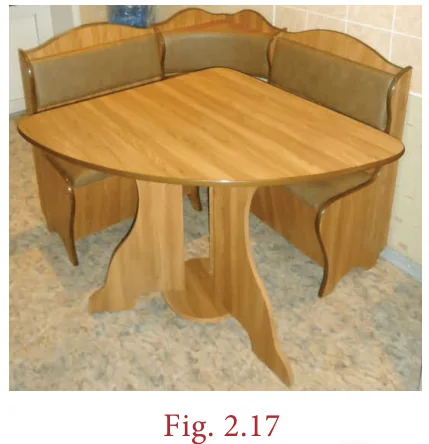
Solution:
Area of the dining table with Kamalesh \(= \pi r^2\) sq. units
\(= \frac{22}{7} \times 70 \times 70\)
\(A = 15400\) sq.cm (approximately.)
Area of the circular quadrant dining table with Tharun
\(= \frac{1}{4}\pi r^2 = \frac{1}{4} \times \frac{22}{7} \times 140 \times 140\)
\(A = 15400\) sq.cm (approximately.)
We find that, the area of the dining tables of both of them have the same area.
Think
If the radius of a circle is doubled, what will happen to the area of the new circle so formed?
Example 2.5

Four identical medals, each of diameter 7cm are placed as shown in Fig. 2.18. Find the area of the shaded region between the medals. \(\left(\pi = \frac{22}{7}\right)\)
Solution:
Diameter, \(d = 7\) cm, therefore \(r = \frac{7}{2}\) cm.
Area of the shaded region = Area of the square \(- \; 4 \times\) Area of the circular quadrant
\(= a^2 - 4 \times \frac{1}{4}\pi r^2\)
\(= (7 \times 7) - \left(4 \times \frac{1}{4} \times \frac{22}{7} \times \frac{7}{2} \times \frac{7}{2}\right)\)
\(= 49 - 38.5 = 10.5\) sq.cm. (approximately)